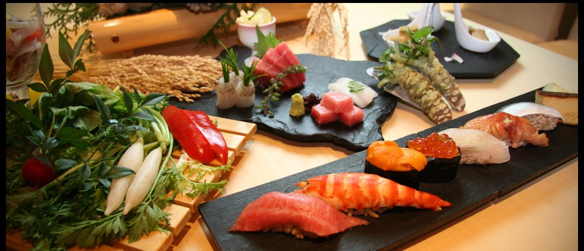

1 · Higashi-Ginza, behind the Kabuki-za · sushiGinza SushimasaSushi again, but a short one. A basement room on the back side of the Kabuki-za theatre, so the street outside is quiet even at noon. The lunch is a short kaiseki: a few cooked dishes first, then a small round of nigiri, then dessert.
Iro course: 5 small dishes and 7 pieces of nigiri, ¥9,900. Yui course: 8 dishes and 9 pieces, ¥13,200. If you only want nigiri, the Ajisai lunch is 7 pieces with a small bowl of chirashi, ¥4,950.